Flying Garden Parts
The parts that make up your Flying Garden.
Making it fly
You need your own Flying Garden first.
1. Register your Flying Garden
-
Go to the Tonka Government Office on Tonka Island and talk to the Tonka Mayor. Choose "I want to register my Flying Garden" and pay 50,000 G.

2. Order the remodel
-
Talk to Meister Selena on Tonka Island and choose Remodel Flying Garden.
-
Choose to pay 10,000 G and bring the materials yourself. The other choice costs 99,990,000 G.
 Meister Selena
Meister Selena3. Bring 30 Iron Plates
-
Bring Selena 30 ×
 Iron Plate. A Miner (Tatarabe) makes them with
Iron Plate. A Miner (Tatarabe) makes them with  Advanced Metal Refining:
Advanced Metal Refining:Item Materials Tool Recipe Iron Plate- 1 ×
 Iron Bullion
Iron Bullion - 1 ×
 Distilled Water
Distilled Water
 Miner Furnace
Miner FurnaceLv 1 - 1 ×
4. Learn the flight rules
-
Talk to Meister Dia next to Selena. She explains the flight rules and fuel.
-
Talk to Selena again. She starts collecting the flight parts.
 Meister Dia
Meister Dia5. Hand in the flight parts
-
Bring Selena these parts. You can hand them in one at a time:
Part Amount How to get it  Airship Deck
Airship Deck1 Talk to Captain Pirate in the Pirate Assembly Hall 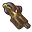
Turbo Engine1 Demand it from Suspicious Man in Light Tower Bottom Floor  Miracle
Miracle1 From a Pirate Tiny on the ship at Tiny Island  Airship Sail
Airship Sail2 Craft it (below)  Big Airship Sail(Quest)
Big Airship Sail(Quest)2 Craft it (below) -
Craft the sails with
 Item Refining:
Item Refining:Item Materials Tool Recipe Airship Sail- 1 ×
 Log
Log - 5 ×
 Waterproof Cloth
Waterproof Cloth - 5 ×
 Harder Timber
Harder Timber - 5 ×
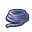
Durable Braid
- Lv 3 Big Airship Sail(Quest)- 1 ×
 Big Log
Big Log - 5 × Waterproof Cloth
- 5 × Harder Timber
- 5 × Durable Braid
- Lv 3 - 1 ×
-
Make their cloth parts with
 Tailoring:
Tailoring:Item Materials Tool Recipe Waterproof Cloth- 1 × Noblest Fabric
- 4 ×
 Paraffin
Paraffin
- Lv 4 Durable Braid 4 × 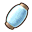
Durable Thread- Lv 2
6. Choose your sail
- When all parts are in, Selena gives you an
 Airship Sail Material List and finishes the remodel. Choose the sail style:
Airship Sail Material List and finishes the remodel. Choose the sail style:- Rocket: you get a
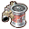
Rocket Sail. - Magic Wing: you get a
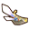
Wing Sail.
- Rocket: you get a
- You also get 10 ×
 Morg Fossil Fuel to fly with.
Morg Fossil Fuel to fly with. - If you carry a
 Catty Booster, Selena can fit a
Catty Booster, Selena can fit a 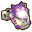
Booster Sail instead.
Sails
| Sail | How to get it |
|---|---|
| Rocket Sail | Remodel by Meister Selena, Rocket style |
| Wing Sail | Remodel by Meister Selena, Magic Wing style |
| Booster Sail | Trade a |
Fuel
- Each flight burns 5 × Morg Fossil Fuel.
- The Furniture Carpenter in Uptown sells it, and so does the Governmental Refinery in Morg City.
House
-
Carpenter Tiny on Tiny Island builds a
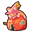
Tiny House. Bring your Airship Key and:
Airship Key and:
- 3 ×
 Tiny Medal
Tiny Medal - 100 ×
 Apple
Apple - 1 ×
 Small House
Small House
- 3 ×
 Carpenter Tiny
Carpenter Tiny
Garden floors
-
Made with Horticulture Craft:
Item Materials Tool Recipe Soil Ground 50 ×  Culture Soil
Culture Soil Shovel
ShovelLv 1  Grass
Grass- 20 ×
 Garden Weed Seed(Large)
Garden Weed Seed(Large) - 30 ×
 Sand
Sand
ShovelLv 1  Carpet of Brick & Lawn
Carpet of Brick & Lawn- 1 ×
 Brick Stone
Brick Stone - 15 × Garden Weed Seed(Large)
- 15 × Sand
- 10 × Culture Soil
 Gardening Scissors
Gardening ScissorsLv 1 - 20 ×
-
Made with
Advanced Metal Refining:Item Materials Tool Recipe Brick Stone- 5 ×
 Clay
Clay - 10 ×
 Muddy Water
Muddy Water - 10 × Sand
Miner FurnaceLv 2  Concrete
Concrete- 5 ×
 Cement
Cement - 10 × Sand
- 10 × Distilled Water
- Lv 2 - 5 ×
-
Made with
 Woodcraft:
Woodcraft:Item Materials Tool Recipe  Teak Board
Teak Board- 20 ×
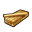
Timber - 20 × Harder Timber
- 30 ×
 Sandpaper
Sandpaper - 15 ×
 Smooth Wax
Smooth Wax
- Lv 3  Teak Patchwork
Teak Patchwork- 2 × Japanese Cypress Timber
- 20 × Harder Timber
- 30 × Sandpaper
- 15 × Smooth Wax
- Lv 3 - 20 ×
Room walls and floors
- The Furniture Carpenter in Uptown sells the
 Classic Wallpaper and the
Classic Wallpaper and the  Classic Floor.
Classic Floor. - These come from Boxes:
 Pretty Wallpaper
Pretty Wallpaper- Fancy Wallpaper
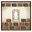
Brick Patterned Wallpaper Wood Patterned Wallpaper
Wood Patterned Wallpaper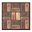
Pretty Brick Floor Fancy Floor
Fancy Floor- Marble Floor
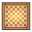
Wooden Floor
-
Make the
 Japanese Style Noble Floor with Woodcraft:
Japanese Style Noble Floor with Woodcraft:Item Materials Tool Recipe Japanese Style Noble Floor- 8 × Harder Timber
- 24 ×
 Giant Barley Straw
Giant Barley Straw - 8 × Durable Thread
- 8 ×
 Silk
Silk
 Tailoring Tools
Tailoring ToolsLv 2 - 8 ×